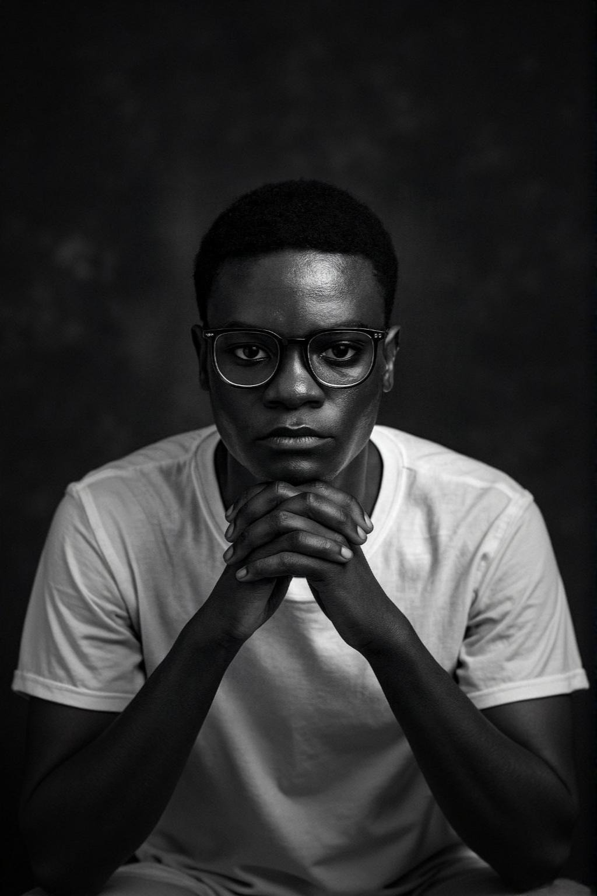
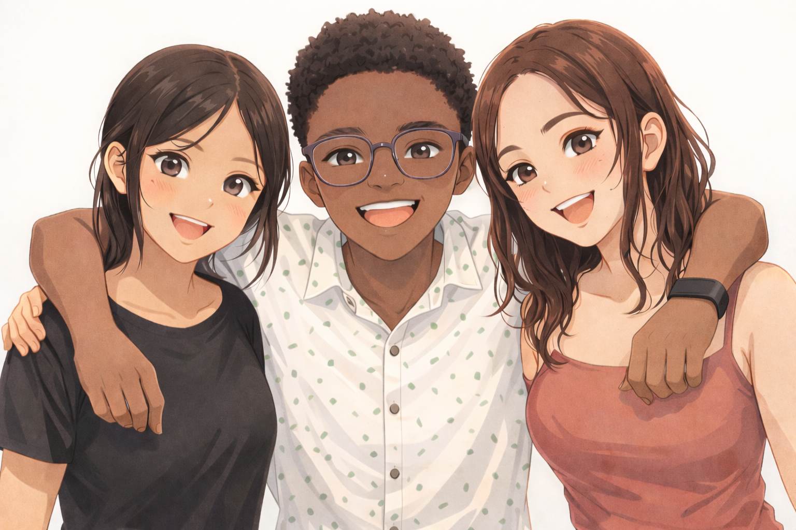
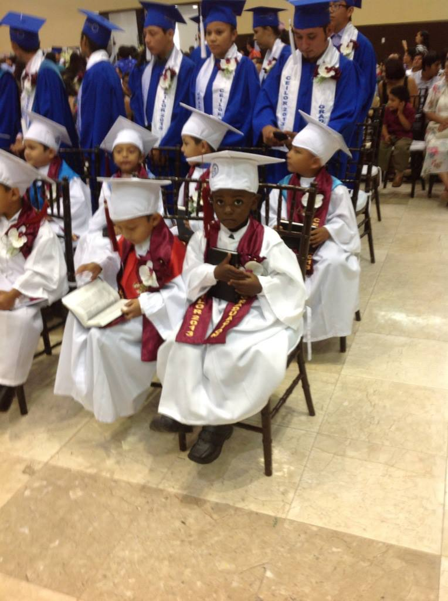
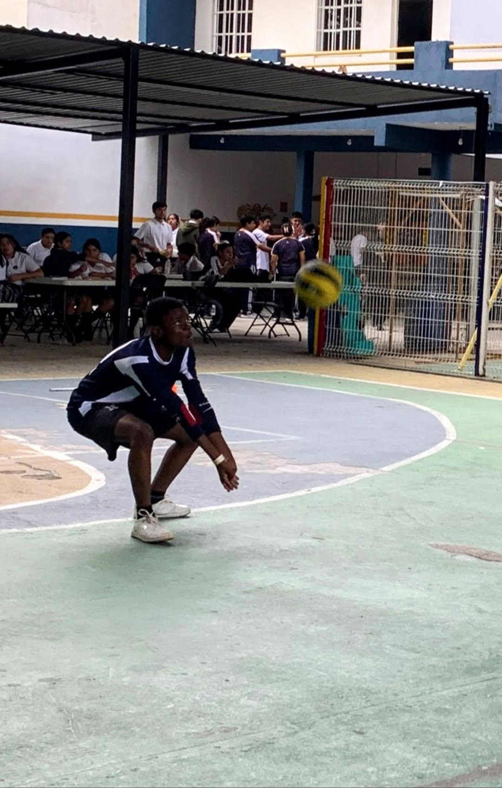
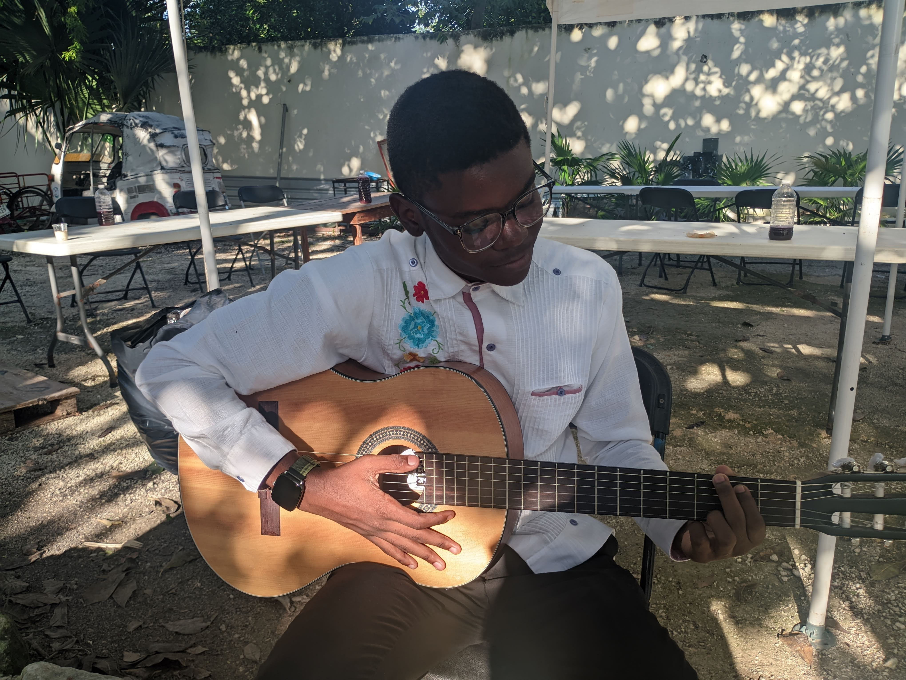
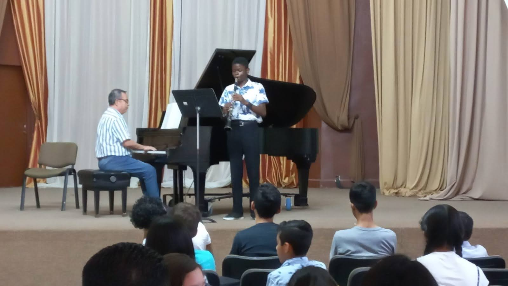
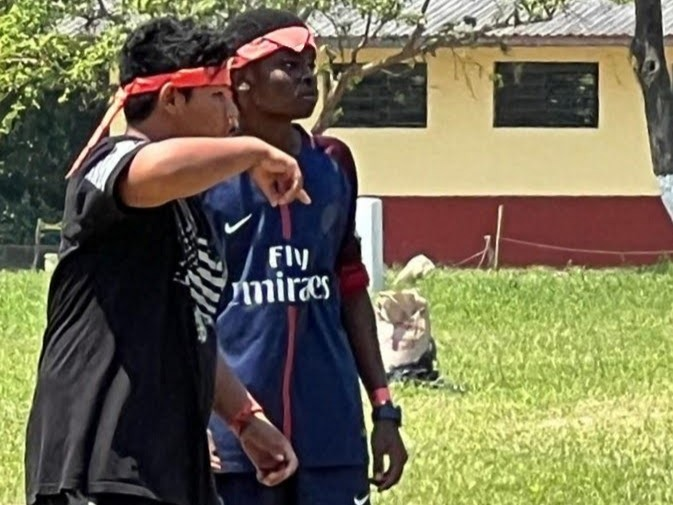
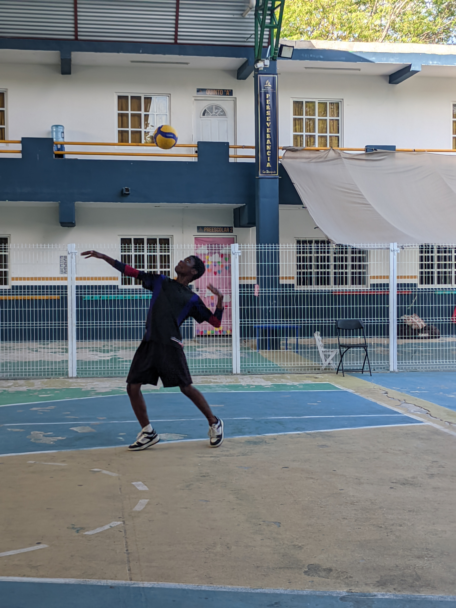

Estudios Realizados
-
Universidad de Montemorelos (UM):
Carrera: Terapia Física y Rehabilitación
Lugar: Universidad de Montemorelos
-

Preparatoria:
Escuela: Colegio Francisco May
Lugar: Playa del Carmen, Q. Roo, México
Edad: 17 años
Fechas: 7 de julio del 2025 -

Secundaria:
Escuela: Colegio Francisco May
Lugar: Playa del Carmen, Q. Roo, México
Edad: 15 años
Fechas: 5 de julio del 2022 -
Primaria:
Escuela: Colegio Ignacio Comonfort
Lugar: Cancún Q. Roo, México
Edad: 11 años
Fecha: 4 de julio del 2019 -

Preescolar:
Escuela: Colegio Ignacio Lopez Rayon
Lugar: Chetumal, Q. Roo, México
Edad: 5 años
Fechas: 10 de junio del 2012
Hobbies y Pasatiempos






Cargos Realizados en la Iglesia
- Cargos: Consejero de Conquistadores y Asistente de Transmisión
- Periodo: Enero del 2021 a Mayo del 2025